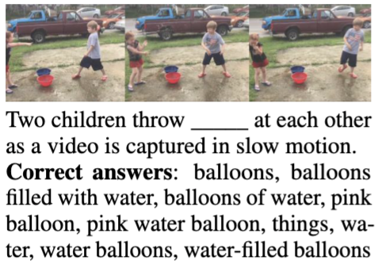

Selected Publications
(* indicates equal contribution)
Your browser does not support the video tag.
Compositional Visual Generation with Composable Diffusion Models
Nan Liu* ,
Shuang Li* ,
Yilun Du* ,
Antonio Torralba ,
Joshua B. Tenenbaum
ECCV 2022
[Website]
[Paper]
[Code]
[Colab]
[Demo]
[MIT News]
Your browser does not support the video tag.
Learning to Compose Visual Relations
Nan Liu* ,
Shuang Li* ,
Yilun Du* ,
Joshua B. Tenenbaum ,
Antonio Torralba
NeurIPS 2021 (Spotlight) / NeurIPS 2021 Workshop on Controllable Generative Modeling (Outstanding Paper Award)
[Website]
[Paper]
[Code]
[MIT News]

FIBER: Fill-in-the-Blanks as a Challenging Video Understanding Evaluation Framework
Santiago Castro ,
Ruoyao Wang ,
Pingxuan Huang ,
Ian Stewart ,Oana Ignat ,
Nan Liu ,
Jonathan Stroud ,
Rada Mihalcea
ACL 2022
[Paper]
[Code]
Teaching
CS 543 : Computer Vision (Fall 2022)
CS 441 : Applied Machine Learning (Fall 2021, Spring 2022)
Template from Jon Barron ,
and design from Joyce Yang .
{kind=link}